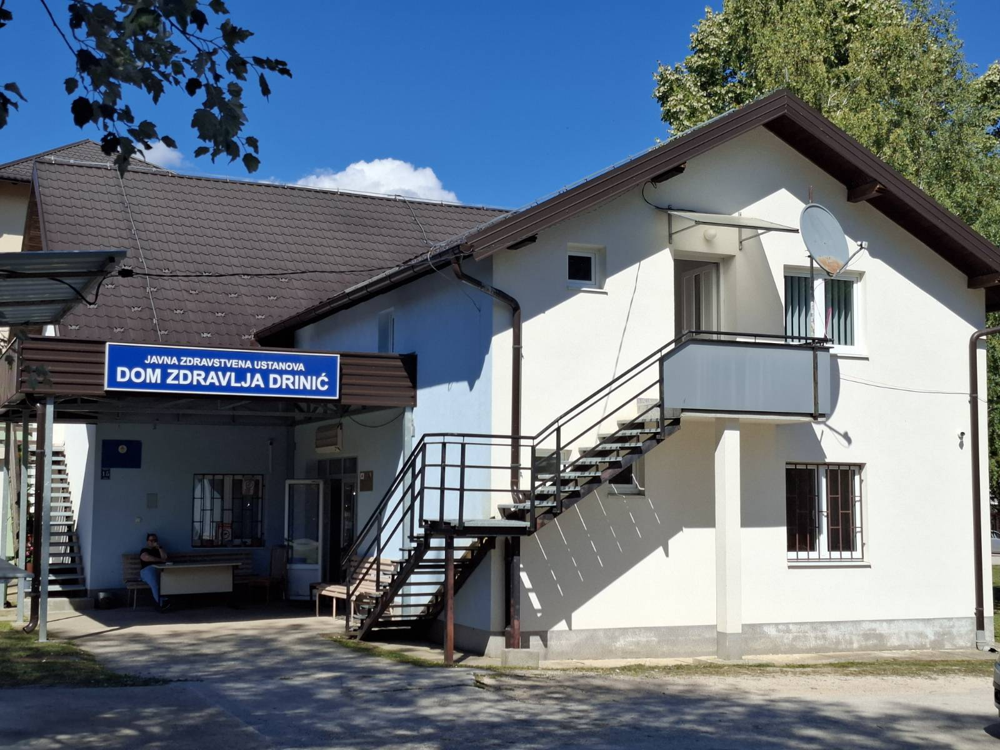

O nama
JZU DZ Drinić osnovan je 2000. godine, u novonastaloj opštini Petrovac, sa sjedištem u Driniću.
Od svog nastanka pokriva primarnom zdravstvenom zaštitom područje opštine Petrovac i dijelove okolnih opština Bosanski Petrovac i Drvar.
Registrovan je jedan tim porodične medicine sa oko 1900 korisnika primarne zdravstvene zaštite.
U ustanovi je zaposleno 8 radnika koji rade u ambulanti porodične medicine, laboratoriji, stomatologiji i ekonomsko-finansijskim poslovima, kao i u tehničkoj službi.
